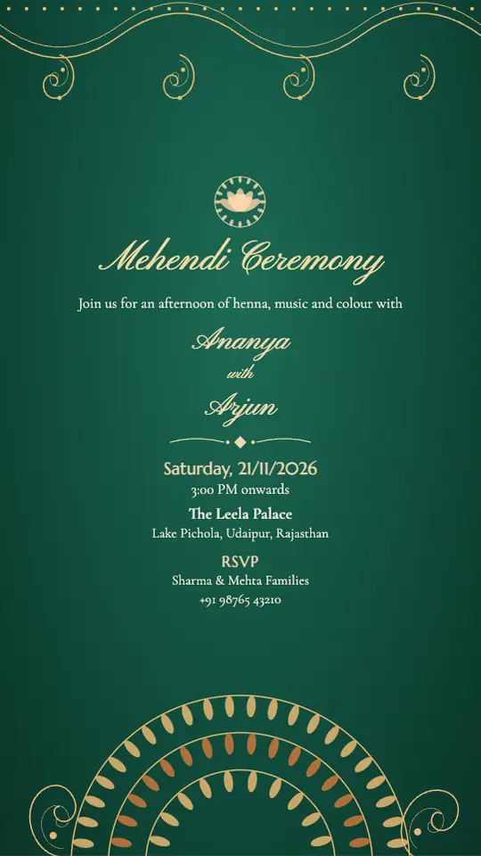
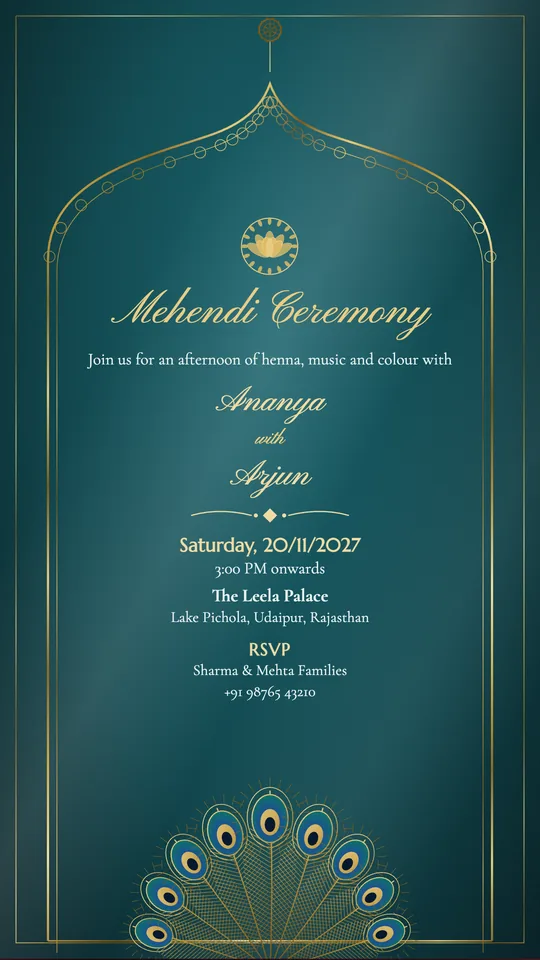
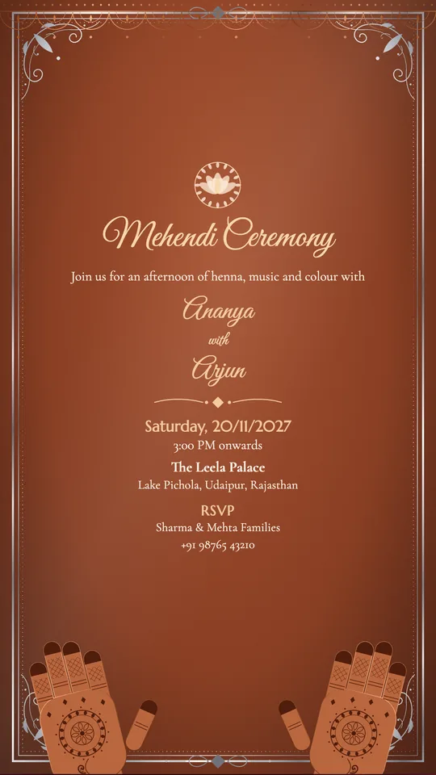

Save the Date · Ring Ceremony · Haldi · Mehendi · Sangeet · Wedding (Vivah) · Reception
Mehendi invitations
The Mehendi is an afternoon or evening gathering where the bride, and often every woman in the family, has henna applied. Guests come and go over several hours, so give a start time with 'onwards' rather than a fixed slot. Mention music or food if there will be any, and note if it is a women-only event.
Like Haldi cards, Mehendi cards are mostly shared digitally. Choose a design that matches the colours of the day: greens and teals sit well beside henna.
Every design below opens in the editor with sample wording for this ceremony. You can switch any card to English, Hindi, Marathi, Gujarati, Punjabi or Tamil once it is open.

Emerald Henna Courtyard
English · Floral, no deity
Emerald green with gold scalloped arches along the top and a copper and gold half mandala at the bottom, like henna patterns drawn on a courtyard floor. English text in script and serif, with no religious line. It suits an afternoon Mehendi with music.

Peacock Teal Mehfil
English · Floral, no deity
Peacock teal inside a fine gold jharokha arch, with a fan of peacock feathers spreading up from the bottom. Peacocks are a classic mehendi motif, and the colour sits well beside green henna. English text, no religious line.

Mehendi Hands Terracotta
English · Floral, no deity
Terracotta, the colour of fresh henna paste, under a slim onion arch. Two hennaed hands rise from the bottom, palms up, with patterns on the palms. It is the most literal Mehendi card in the set and easy for guests to recognise at a glance. English text, no religious line.

Jharokha Jaal
Hindi · Floral, no deity
Deep bottle green with a gold jharokha window at the bottom, its jaal latticework drawn in fine lines, like the carved stone screens of Rajasthani havelis. The Hindi sample is headed मेहँदी रस्म. No religious line, so it works across families.

Mayun Night Parandi
Punjabi · Ek Onkar
Mayun is the Punjabi pre-wedding gathering, often on the same night as the Mehendi. Dark green with gold parandi tassels hanging along the top, like the braid ornaments worn that night, and a red woven border at the bottom. Text is in Punjabi under ਮਹਿੰਦੀ ਦੀ ਰਸਮ, with Ek Onkar at the top.
Not sure what to write? Read the wording guide for every ceremony.